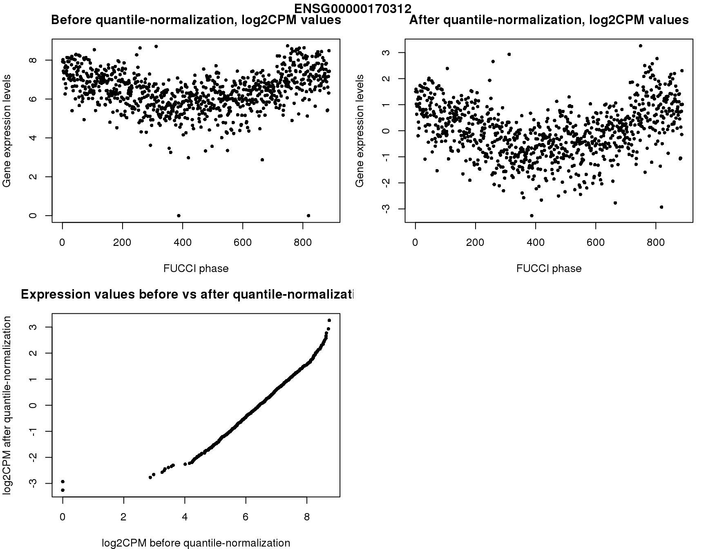
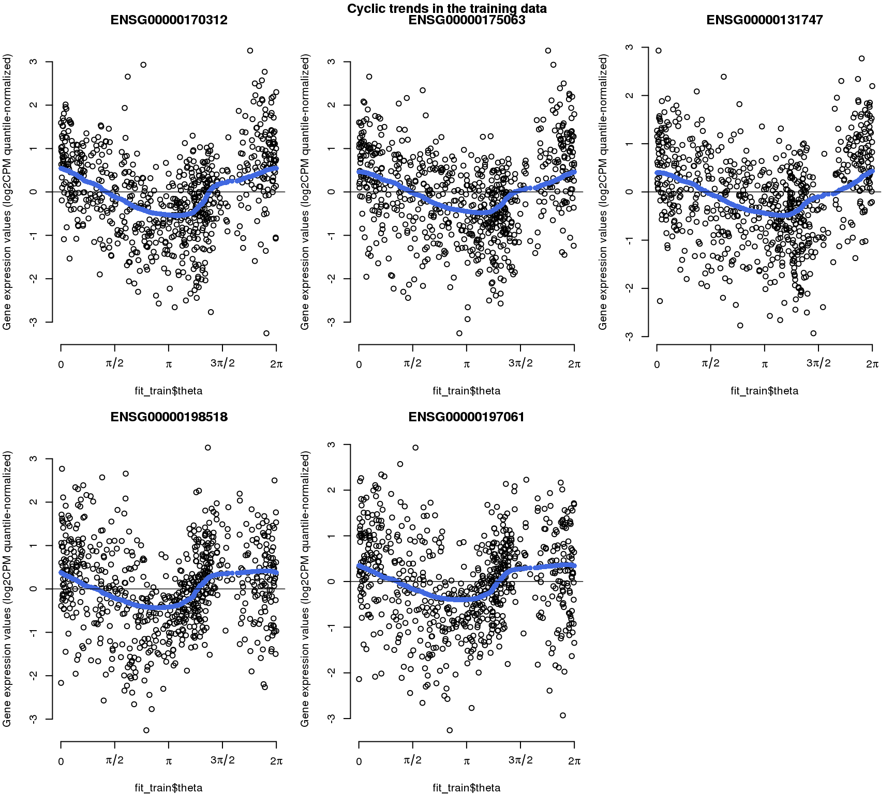
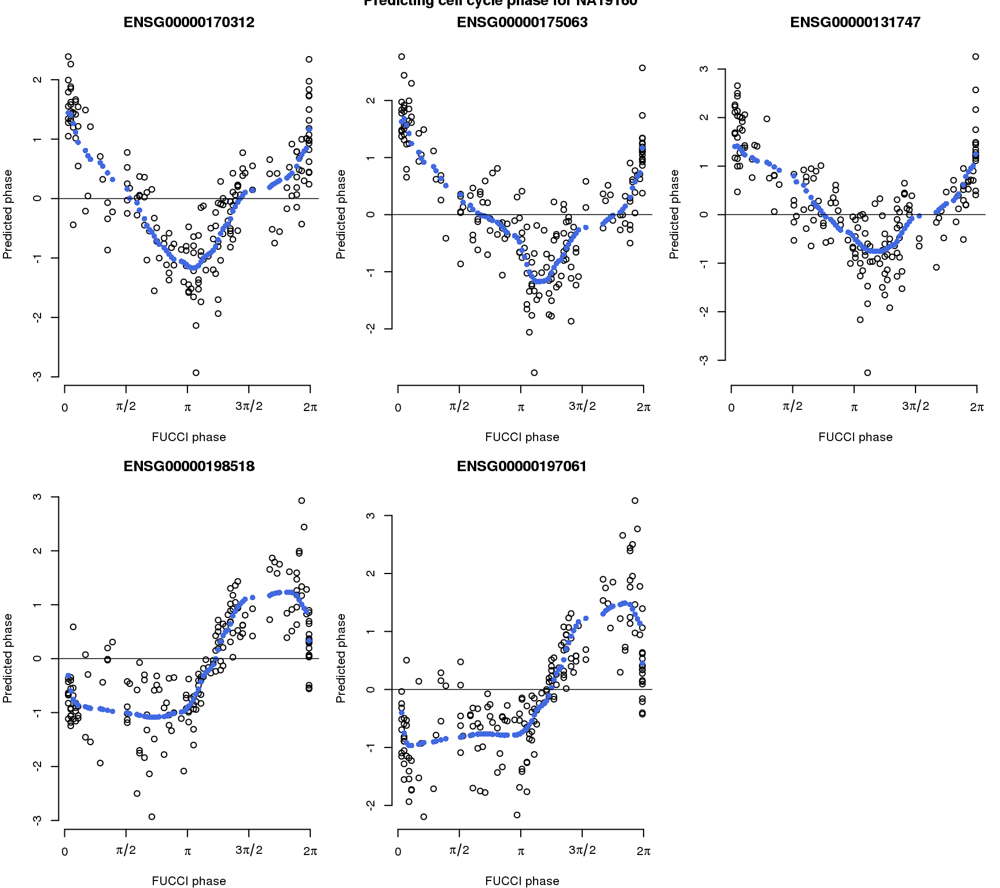

vignettes/example_ipsc.Rmd
example_ipsc.Rmdpeco is a supervised approach for PrEdicting cell cycle phase in a COntinuum using single-cell RNA sequencing data in human induced pluripotent stem cells (iPSCs). This vignette provides a simple example of predicting cell cycle phase using 5 genes. These 5 genes were identified as exhibiting strong cyclic trend in our analysis, and also as cell-cycle marker genes in previous cell-cycle studies using yeast (Spellman et al., 1998) and HeLa cells (Whitfield et al., 2002).
library(Biobase)
library(peco)
# expression set of top 100 cyclic genes
# All 11,040 genes included in our dataset
# ordered by cyclic trend (strong to weak)
Note that we mapped our data to GRCh37 Ensembl Assembly.
# phenotype information
pdata <- pData(eset)
# gene information
fdata <- fData(eset)
# select endogeneous genes
# normalize molecule count for differencese in library sizes
# reordering the data according to FUCCI phase
# quantile-transform each gene to normal distribution
yy <- log2cpm[g,]
yy.qq <- qq.map$x
return(yy.qq)
}) )
# Select single-cell samples for our prediction example
# use top 5 cyclic genes for prediciton
ngenes <- 5
which_genes <- genes_cyclic_list$ensg[1:ngenes]We quantile-normalize log2CPM values for each gene to a normal distribution. The samples with zero molecule count are each assigned a different quantile value. By doing this, the transformed gene expression values centered at 0 with standard deviation of 1.
main="Before quantile-normalization, log2CPM values",
xlab="FUCCI phase", ylab="Gene expression levels")
main="After quantile-normalization, log2CPM values",
xlab="FUCCI phase", ylab="Gene expression levels")
main="Expression values before vs after quantile-normalization",
xlab="log2CPM before quantile-normalization",
ylab="log2CPM after quantile-normalization")

data(fit)
#> Warning in data(fit): data set 'fit' not foundEstimating cyclic functions of the desired genes using the traing data. In this example, we include single-cell samples from 5 individuals.
# learning cyclic functions of the genes using our training data
theta = theta_train,
polyorder=2,
ncores=1,
method.trend="trendfilter")Fitted cyclic trend in the training data.
for (g in 1:5) {
plot(fit_train$Y[g,],
x=fit_train$theta, axes=F,
ylab="Gene expression values (log2CPM quantile-normalized)")
x=fit_train$theta,
pch=16, col="royalblue")
}

Predicting cell cycle phase for single-cell samples from one individual.
# predicting cell cycle phase for single-cell samples from one individual
# that is not included in the training
sigma_est=fit_train$sigma_est,
funs_est=fit_train$funs_est,
theta_prior=fit_train$theta,
method.grid = "uniform",
method.trend="trendfilter",
polyorder=2, ncores=1)Plot predicted phase versus FUCCI phase
names(theta_test))]
#> [1] TRUE
for (g in 1:5) {
plot(fit_predict$Y_reordered[g,],
x=fit_predict$cell_times_reordered, axes=F,
xlab="FUCCI phase",
ylab="Predicted phase")
x=fit_predict$cell_times_reordered,
pch=16, col="royalblue")
}

#> R version 3.5.1 (2018-07-02)
#> Platform: x86_64-pc-linux-gnu (64-bit)
#> Running under: Scientific Linux 7.4 (Nitrogen)
#>
#> Matrix products: default
#> BLAS/LAPACK: /software/openblas-0.2.19-el7-x86_64/lib/libopenblas_haswellp-r0.2.19.so
#>
#> locale:
#> [1] LC_CTYPE=en_US.UTF-8 LC_NUMERIC=C
#> [3] LC_TIME=en_US.UTF-8 LC_COLLATE=en_US.UTF-8
#> [5] LC_MONETARY=en_US.UTF-8 LC_MESSAGES=en_US.UTF-8
#> [7] LC_PAPER=en_US.UTF-8 LC_NAME=C
#> [9] LC_ADDRESS=C LC_TELEPHONE=C
#> [11] LC_MEASUREMENT=en_US.UTF-8 LC_IDENTIFICATION=C
#>
#> attached base packages:
#> [1] parallel stats graphics grDevices utils datasets methods
#> [8] base
#>
#> other attached packages:
#> [1] peco_0.6.1 Biobase_2.42.0 BiocGenerics_0.28.0
#>
#> loaded via a namespace (and not attached):
#> [1] igraph_1.2.2 Rcpp_1.0.0 knitr_1.20 xml2_1.2.0
#> [5] magrittr_1.5 roxygen2_6.1.1 MASS_7.3-51.1 conicfit_1.0.4
#> [9] lattice_0.20-38 R6_2.3.0 rlang_0.3.1 stringr_1.3.1
#> [13] tools_3.5.1 grid_3.5.1 circular_0.4-93 htmltools_0.3.6
#> [17] commonmark_1.6 yaml_2.2.0 rprojroot_1.3-2 digest_0.6.18
#> [21] assertthat_0.2.0 pkgdown_1.3.0 crayon_1.3.4 genlasso_1.4
#> [25] Matrix_1.2-15 fs_1.2.6 memoise_1.1.0 evaluate_0.12
#> [29] rmarkdown_1.10 pracma_2.1.8 stringi_1.2.4 compiler_3.5.1
#> [33] desc_1.2.0 backports_1.1.2 boot_1.3-20 mvtnorm_1.0-8
#> [37] geigen_2.2 pkgconfig_2.0.2